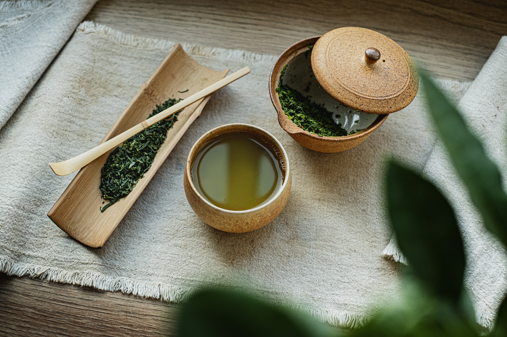
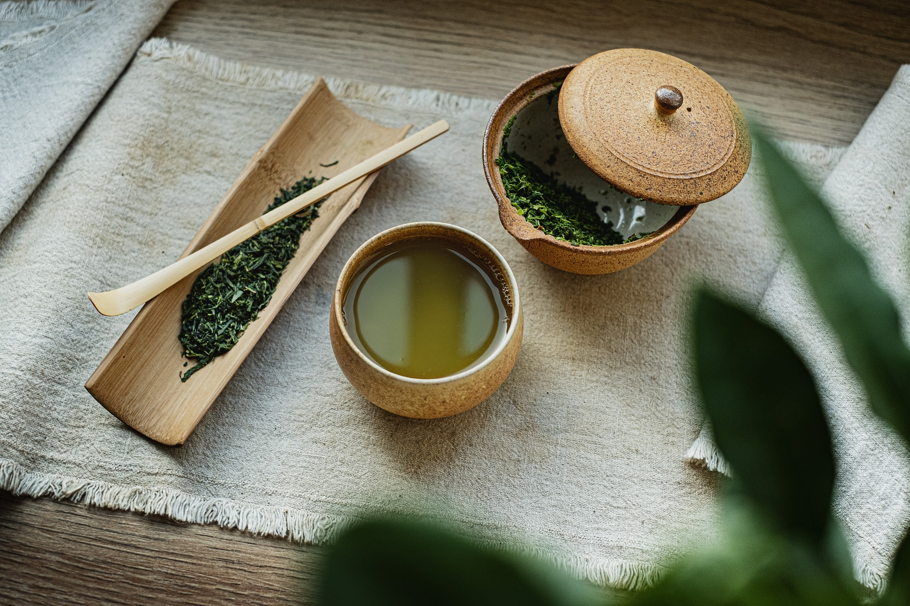

Wusstest du das? Grüner Tee
Der Grüne Tee kommt ursprünglich aus China. In Japan gibt es auch eine Teezeremonie, welche bis vor einigen Jahrzehnten zur Allgemeinbildung gehörte.
Sushi ist das wohl bekannteste Gericht Japans. Sushi besteht aus Reis und verschiedenen Beilagen wie z.B. Algen oder Lachs. Die acht bekanntesten Sushi-Varianten sind...
Ein anderes bekanntes Gericht sind Ramen. Ramen ist eine japanische Nudelsuppe. Sie werden in Japan in ramen-ya verkauft. Dies sind Restaurants, welche sich auf Ramen spezialisiert haben. Es gibt verschiedene Typen, welche aus unterschiedlichen Brühen bestehen...
Der Grüne Tee kommt ursprünglich aus China. In Japan gibt es auch eine Teezeremonie, welche bis vor einigen Jahrzehnten zur Allgemeinbildung gehörte.
